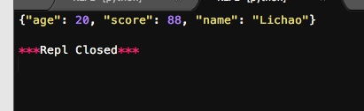

我们把变量从内存中变成可存储或传输的过程称之为序列化，在Python中叫pickling，在其他语言中也被称之为serialization，marshalling，flattening等等，都是一个意思。
序列化之后，就可以把序列化后的内容写入磁盘，或者通过网络传输到别的机器上。
反过来，把变量内容从序列化的对象重新读到内存里称之为反序列化，即unpickling。
Python提供两个模块来实现序列化：cPickle和pickle。这两个模块功能是一样的，区别在于cPickle是C语言写的，速度快，pickle是纯Python写的，速度慢，跟cStringIO和StringIO一个道理。用的时候，先尝试导入cPickle，如果失败，再导入pickle：
try:
import cPickle as pickle
except ImportError:
import pickle
我们尝试把一个对象序列化并写入文件：
#-*- coding: utf-8 -*-
try:
import cPickle as pickle
except ImportError:
import pickle
d = dict(name='LZH',age=20,score=88)
print pickle.dumps(d)
pickle.dumps()方法把任意对象序列化成一个str，然后，就可以把这个str写入文件。或者用另一个方法pickle.dump()直接把对象序列化后写入一个file-like Object：
#-*- coding: utf-8 -*-
try:
import cPickle as pickle
except ImportError:
import pickle
d = dict(name='梁中豪',age=20,score=88)
f = open('test.txt','wb')
pickle.dump(d,f)
f.close
我们可以读取文件中这些内容，并且将他们反序列化来显示原来的内容：
#-*- coding: utf-8 -*-
try:
import cPickle as pickle
except ImportError:
import pickle
#d = dict(name='梁中豪',age=20,score=88)
f = open('test.txt','rb')
print pickle.load(f)
f.close
可以先把内容读到一个str，然后用pickle.loads()方法反序列化出对象，也可以直接用pickle.load()方法从一个file-like Object中直接反序列化出对象
Pickle的问题和所有其他编程语言特有的序列化问题一样，就是它只能用于Python，并且可能不同版本的Python彼此都不兼容，因此，只能用Pickle保存那些不重要的数据，不能成功地反序列化也没关系。
下面我们用JSON来进行网络间的数据传递。
JSON
如果我们要在不同的编程语言之间传递对象，就必须把对象序列化为标准格式，比如XML，但更好的方法是序列化为JSON，因为JSON表示出来就是一个字符串，可以被所有语言读取，也可以方便地存储到磁盘或者通过网络传输。JSON不仅是标准格式，并且比XML更快，而且可以直接在Web页面中读取，非常方便。
JSON表示的对象就是标准的JavaScript语言的对象，JSON和Python内置的数据类型对应如下：
| Json类型 | Python类型 |
|---|---|
| {} | dict |
| [] | list |
| string | str或u'unicode' |
| 12345.56 | int或float |
| true/false | True/False |
| null | None |
Python内置的json模块提供了非常完善的Python对象到JSON格式的转换。我们先看看如何把Python对象变成一个JSON：
import json
d = dict(name='Lichao', age=20, score=88)
print json.dumps(d)

dumps()方法返回一个str，内容就是标准的JSON。类似的，dump()方法可以直接把JSON写入一个file-like Object。
要把JSON反序列化为Python对象，用loads()或者对应的load()方法，前者把JSON的字符串反序列化，后者从file-like Object中读取字符串并反序列化：
import json
json_str = '{"age": 20, "score": 88, "name": "Lichao"}'
print json.loads(json_str)
有一点需要注意，就是反序列化得到的所有字符串对象默认都是unicode而不是str。由于JSON标准规定JSON编码是UTF-8，所以我们总是能正确地在Python的str或unicode与JSON的字符串之间转换。
JSON进阶
Python的dict对象可以直接序列化为JSON的{}，不过，很多时候，我们更喜欢用class表示对象，比如定义Student类，然后序列化：
import json
class Student(object):
def __init__(self, name, age, score):
super(Student, self).__init__()
self.name = name
self.age = age
self.score = score
s = Student('LiChao', 20, 88)
print(json.dumps(s))

向上述那样调用，会报错，因为Student对象不是一个可序列化为JSON的对象。
我们仔细看看dumps()方法的参数列表，可以发现，除了第一个必须的obj参数外，dumps()方法还提供了一大堆的可选参数。
这些可选参数就是让我们来定制JSON序列化。前面的代码之所以无法把Student类实例序列化为JSON，是因为默认情况下，dumps()方法不知道如何将Student实例变为一个JSON的{}对象。
可选参数default就是把任意一个对象变成一个可序列为JSON的对象，我们只需要为Student专门写一个转换函数，再把函数传进去即可：
import json
def student2dict(std):
return {
'name':std.name,
'age':std.age,
'score':std.score
}
class Student(object):
def __init__(self, name, age, score):
super(Student, self).__init__()
self.name = name
self.age = age
self.score = score
s = Student('LiChao', 20, 88)
print(json.dumps(s,default=student2dict))

这样，Student实例首先被student2dict()函数转换成dict，然后再被顺利序列化为JSON。
不过，下次如果遇到一个Teacher类的实例，照样无法序列化为JSON。我们可以偷个懒，把任意class的实例变为dict：
print(json.dumps(s, default=lambda obj: obj.__dict__))
因为通常class的实例都有一个__dict__属性，它就是一个dict，用来存储实例变量。也有少数例外，比如定义了__slots__的class。
同样的道理，如果我们要把JSON反序列化为一个Student对象实例，loads()方法首先转换出一个dict对象，然后，我们传入的object_hook函数负责把dict转换为Student实例：
import json
def dict2students(d):
return Student(d['name'],d['age'],d['score'])
class Student(object):
def __init__(self, name, age, score):
super(Student, self).__init__()
self.name = name
self.age = age
self.score = score
json_str = '{"age": 20, "score": 88, "name": "Bob"}'
print(json.loads(json_str,object_hook=dict2students))

打印出的是反序列化的Student实例对象。
小结
Python语言特定的序列化模块是pickle，但如果要把序列化搞得更通用、更符合Web标准，就可以使用json模块。
json模块的dumps()和loads()函数是定义得非常好的接口的典范。当我们使用时，只需要传入一个必须的参数。但是，当默认的序列化或反序列机制不满足我们的要求时，我们又可以传入更多的参数来定制序列化或反序列化的规则，既做到了接口简单易用，又做到了充分的扩展性和灵活性。